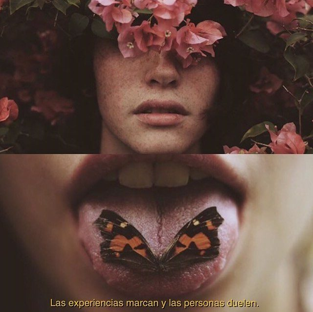
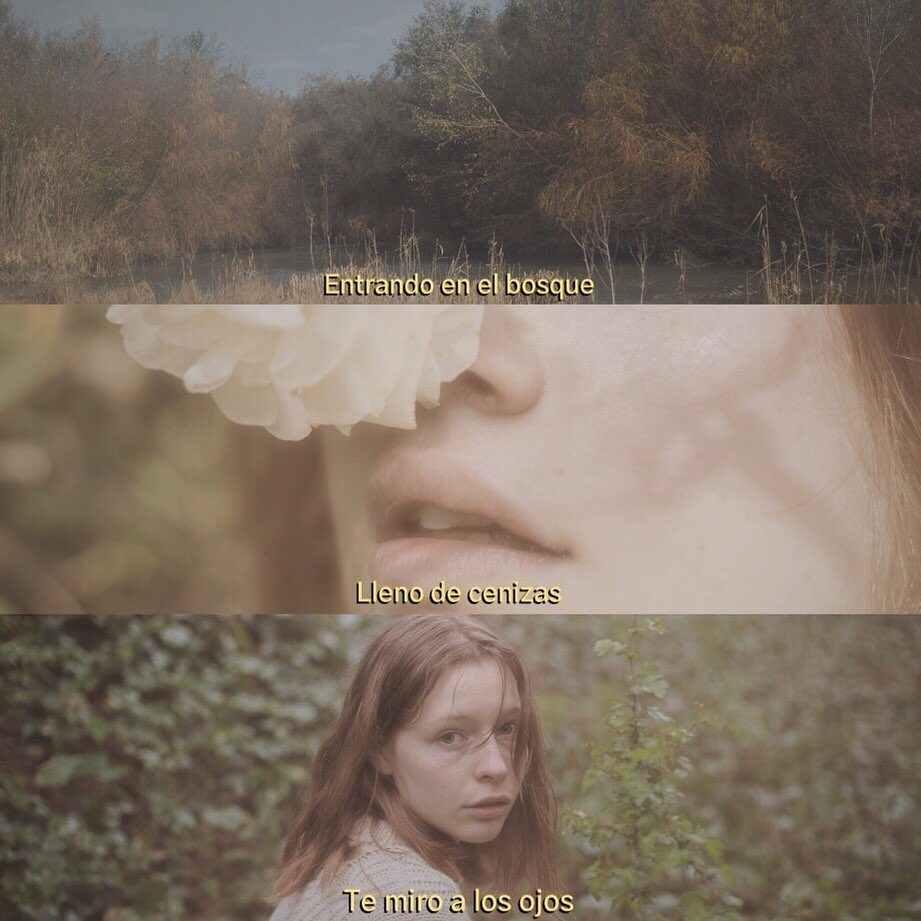

Tony Nieve
Concept
A personal photography project, started in 2016 and built on ever since. Portraits made with a naturalistic eye, where the image goes beyond aesthetics: it tells a story.
Photography and art direction. Portraiture, colour and composition.






The project
There is something of a fairy tale in these images, and something melancholic too. Each photograph builds a small universe —a light, a gesture, a character— and trusts the story to emerge on its own, without spelling it out. Although it began as a personal project, its language carries over naturally into fashion, editorial and art direction.
Next project